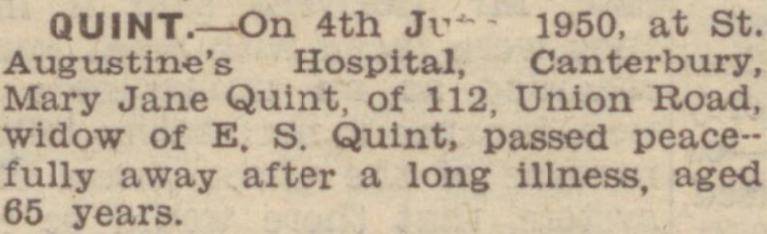

Mary Jane Quint (née Rolfe) 1884 - 1950
[ Home ] | [ Calendar ] | [ Surnames Index ] | [ Errors ] | [ Family History ]A domestic general servant and the 4th of 7 children of James Rolfe (a coachman) and Elizabeth Waite, Mary Rolfe, the second cousin twice-removed on the father's side of Nigel Horne, was born in Hythe, Kent, England on 21 Jun 18841,2,3,4,5, was baptised in Cheriton, Kent, England on 3 Aug 1884 and married Edward Quint (a harbourman with whom she had 5 children: Edward James, Rose Mary, Beatrice May, Charles David and William Frederick) in Dover, Kent, England on 26 Jun 19096.
During her life, she was living at Cheriton Court in Cheriton on 5 Apr 18911; at Snargate Street in Dover on 31 Mar 19017 - less than a mile from her first cousin once-removed on her father's side Eliza Tutt who was living at 5 Eaton Road in Dover and her second cousin on her father's side Walter Tunbridge, second cousin on her father's side Frank Tunbridge, second cousin on her father's side Albert Tunbridge and second cousin on her father's side Lily Tunbridge who were living at 5 Eaton Road in Dover -; at Lansdowne Cottages, Union Road in Dover on 2 Apr 19118; and at 112 Union Road in Dover on 19 Jun 19212 and on 29 Sept 19393.
She died on 4 Jun 1950 at St Augustine's Hospital, Chartham, Kent5.
Parents
- James was born on 13 Jan 1853
- Elizabeth Serena was born in 1859
Children
- Edward James was born on 7 Jun 1910
- Rose Mary was born on 1 Nov 1911
- Beatrice May was born on 7 Jun 1913
- Charles David was born c. Aug 1916
- William Frederick was born on 23 Dec 1919
Citations
- 1891 England, Wales & Scotland Census - Findmypast (was age 6 and the daughter of the head of the household)
- 1921 Census Of England & Wales - Findmypast (was age 36 and the wife of the head of the household)
- 1939 Register - Findmypast (was the head of the household)
- England & Wales births 1837-2006 - Findmypast
- England & Wales deaths 1837-2007 - Findmypast
- England & Wales Marriages 1837-2005 - Findmypast
- 1901 England, Wales & Scotland Census - Findmypast (was age 16 and a servant in the household)
- 1911 Census for England & Wales - Findmypast (was age 28 and the wife of the head of the household)
Media
Dover Express - 16 Jun 1950

Dover Express - 9 Jun 1950

England & Wales births 1837-2006 - BMD/B/1884/3/AZ/000495/356
England Births & Baptisms 1538-1975 - R_885430481
1901 England, Wales & Scotland Census - GBC-1901-0005534299
England & Wales marriages 1837-2005 - BMD/M/1909/2/AZ/000331/147
1911 Census for England & Wales - GBC/1911/RG14/04613/0743/2
1939 Register - TNA/R39/1714/1714B/012/02
England & Wales deaths 1837-2007 - BMD/D/1950/2/AZ/000789/047
Family Tree

Map
Generated by ged2site. Last updated on Jul 3, 2024
Known Issues
Listed in the residence for 29 Sep 1939, but spouse Edward Quint is not